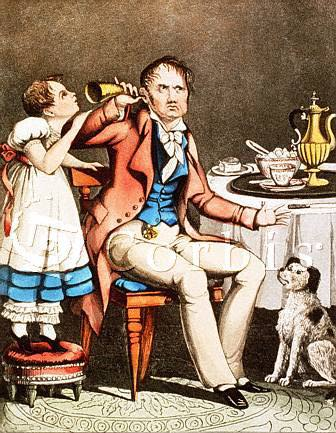

. (from "Hollywood Squares") As you grow older, do you tend to gesture more or less with your hands while talking?
. (from "Hollywood Squares") As you grow older, do you tend to gesture more or less with your hands while talking?

[The image above is from http://shopping.corbis.com/search/details.asp?imageid=10012382 (Corbis - Hearing), which is no longer extant.])
. (from "Hollywood Squares") As you grow older, do you tend to gesture more or less with your hands while talking?
A. Rose Marie: You ask me one more growing old question Peter, and I'll give you a gesture you'll never forget!
 t the beginning of my shift I placed a stethoscope on an elderly and slightly deaf female patient's anterior chest wall.
t the beginning of my shift I placed a stethoscope on an elderly and slightly deaf female patient's anterior chest wall.
"Big breaths," I instructed.
"Yes, they used to be," replied the patient.
 Two Ronnies: Deaf in the trenches. Ronnie Barker and Ronnie Corbett in "The Two Ronnies" in a skit about having difficulty hearing in the trenches.
Two Ronnies: Deaf in the trenches. Ronnie Barker and Ronnie Corbett in "The Two Ronnies" in a skit about having difficulty hearing in the trenches.
 orris, an 82 year-old man, went to the doctor to get a physical. A few days later, the doctor saw Morris walking down the street with a gorgeous young woman on his arm.
orris, an 82 year-old man, went to the doctor to get a physical. A few days later, the doctor saw Morris walking down the street with a gorgeous young woman on his arm.
A couple of days later, the doctor spoke to Morris and said, "You're really doing great, aren't you?" Morris replied, "Just doing what you said, Doc: 'Get a hot mamma and be cheerful.'"
The doctor said, "I didn't say that I said, 'You've got a heart murmur; be careful.'"
 hree old guys are out walking. First one says,
hree old guys are out walking. First one says,
"Windy, isn't it?"
Second one says, "No, it's Thursday!"
Third one says, "So am I. Let's go get a beer."
n elderly gentleman had serious hearing problems for a number of years. He went to the doctor and the doctor was able to have him fitted for a set of hearing aids that allowed the gentleman to hear 100%. The elderly gentleman went back in a month to the doctor and the doctor said, "Your hearing is perfect. Your family must be really pleased that you can hear again."
The gentleman replied, "Oh, I haven't told my family yet. I just sit around and listen to the thing they say about me."
 ecently a juror approached the clerk of an American Supreme Judicial Court, and stated that it would be impossible for him to serve. "Why not?" inquired the clerk. "Because I'm deaf," responded the juror. The clerk had reason for incredulity, and so informed the deaf man, in a whisper, that he would report his case to the judge. Turning to his Honour, he said, "Mr. Badman, of Manchester, desires to be excused." "What are his reasons?" asked his Honour, without raising his eyes from the paper he was reading. "He says he is deaf," replied the clerk. "He is excused," said the judge, quickly; "if he is deaf, we don't want him, and if he is a liar, we don't want him."
ecently a juror approached the clerk of an American Supreme Judicial Court, and stated that it would be impossible for him to serve. "Why not?" inquired the clerk. "Because I'm deaf," responded the juror. The clerk had reason for incredulity, and so informed the deaf man, in a whisper, that he would report his case to the judge. Turning to his Honour, he said, "Mr. Badman, of Manchester, desires to be excused." "What are his reasons?" asked his Honour, without raising his eyes from the paper he was reading. "He says he is deaf," replied the clerk. "He is excused," said the judge, quickly; "if he is deaf, we don't want him, and if he is a liar, we don't want him."
 ld man Murray goes to the doctor with a very worried look on his face. "Doctor," he says, "You've got to help me. Do you remember those voices in my head I always complain about?"
ld man Murray goes to the doctor with a very worried look on his face. "Doctor," he says, "You've got to help me. Do you remember those voices in my head I always complain about?"
"Yes," the doctor replies.
"Well they've suddenly gone away," Murray says.
"So what's the problem?"
"I think I'm going deaf."
scar Wilde was asked to buy a subscription to the opera. However, he found the opera boring and refused. It was pointed out to him that his friend had bought a subscription and his friend was even deaf.
Wilde replied, "If I were deaf, I would buy one too."
 od isn't deaf.
od isn't deaf.
Two young boys were spending the night at their grandparents. At bedtime, the two boys knelt beside their beds to say their prayers when the youngest one began praying at the top of his lungs, "I PRAY FOR A NEW BICYCLE. I PRAY FOR A NEW NINTENDO. I PRAY FOR A NEW VCR..."
His older brother leaned over and nudged the younger brother and said, "Why are you shouting your prayers? God isn't deaf."
To which the little brother replied, "No, but Gramma is!"
 araoke: A Japanese word meaning "tone deaf".
araoke: A Japanese word meaning "tone deaf".
 im was speeding along the road one fine day when the local policeman, a friend of his, pulled him over. "What's wrong, Eric?" Jim asked. "Well didn't you know, Jim, that your wife fell out of the car about five miles back?" said Eric. "Ah, praise God!" he replied with relief. "I thought I'd gone deaf!"
im was speeding along the road one fine day when the local policeman, a friend of his, pulled him over. "What's wrong, Eric?" Jim asked. "Well didn't you know, Jim, that your wife fell out of the car about five miles back?" said Eric. "Ah, praise God!" he replied with relief. "I thought I'd gone deaf!"
Return to the table of contents for "Humor and stories for interpreters".